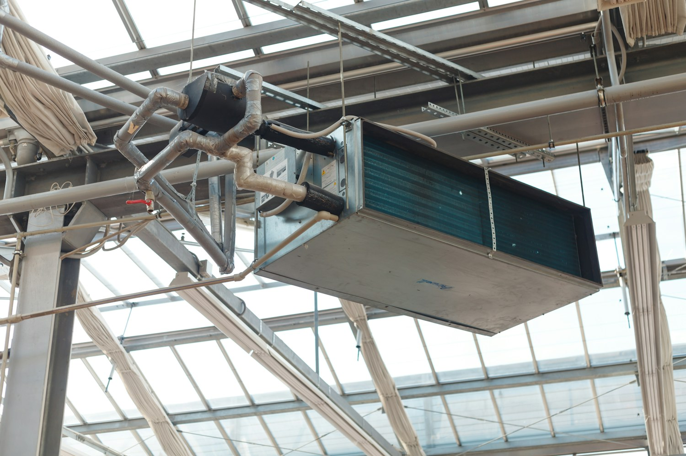

Tiberias & Northern Israel
Ventilation cleaning and maintenance
We clean accessible ductwork and supply and return grilles in offices, hotels and apartment buildings in Tiberias and northern Israel. Book a single visit or arrange a maintenance schedule.
What happens on site
We walk through the system with your facilities contact, identify access points and agree which sections to clean. We clean those accessible sections and grilles and check the condition of the filters.
For recurring visits we agree the scope and interval in advance. Filter replacement, opening a ceiling and equipment repairs are not automatically included.
Budgeting for the work
Israeli providers price ducts differently. One lists duct cleaning from ₪300 per duct before VAT. Another lists ₪349 for the central unit plus ₪199 per duct; that listing does not specify VAT treatment.
These are examples for ducted air conditioning, not a price for an entire commercial ventilation network. We quote for duct length, outlet count, access and permitted working hours.
Market price sources: Kashaf Avir · HaMerkaz ACWhat to send for a quote
Send the town, building type, approximate number of outlets and a photo of an accessible grille or inspection hatch. A duct plan and any limits on working hours are helpful.